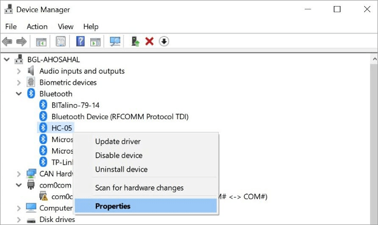
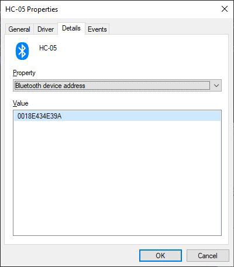
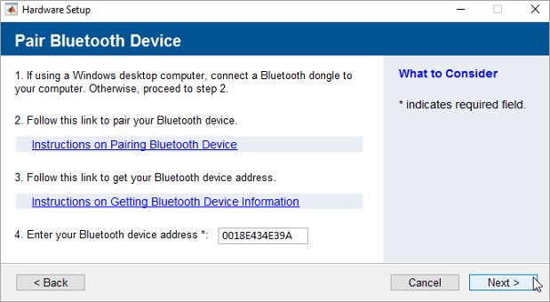
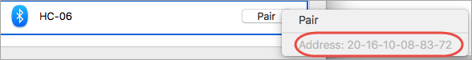
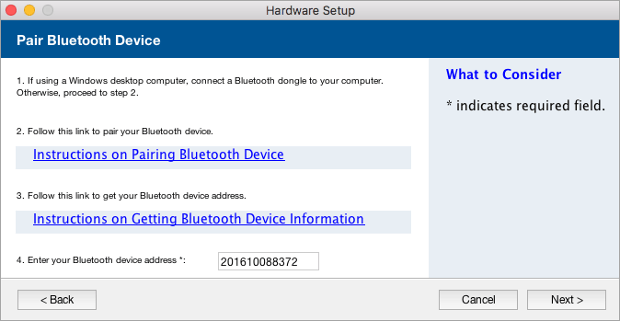

Pair a Bluetooth Device and Retrieve the Bluetooth Device Address
You can pair the Bluetooth® device to your host computer and retrieve the Bluetooth device address or serial port based on your operating system. Before you pair, make sure that the Bluetooth device is connected to the Arduino® board and is powered properly.
Retrieve Bluetooth Address for Windows
Find the Bluetooth Address for HC-05 and HC-06
Open the Device Manager on your Windows® machine.
Right-click on the HC-05 or HC-06 Bluetooth device under Bluetooth and select Properties.

Click Details menu, and then select the Property as
Bluetooth device address. The Value is the Bluetooth address of the device.
Enter the Bluetooth device address on the
arduinosetupinterface and click Next to configure the device.
Retrieve Bluetooth Address for Mac
Find the Bluetooth Address for HC-05 and HC-06
Before your pair HC-05 and HC-06 Bluetooth devices to your Mac, right-click on Pair under Open Bluetooth Preferences in the Bluetooth menu. You see the Bluetooth address of your device.

Enter the Bluetooth device address without dashes as an hexadecimal string on the
arduinosetupinterface, and click Next to configure the device.